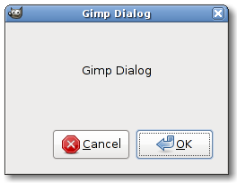

| GIMP Widgets Library Reference Manual | ||||
|---|---|---|---|---|
| Top | Description | Object Hierarchy | Implemented Interfaces | Properties | ||||
GimpDialogGimpDialog — Constructors for GtkDialog's and action_areas as well as other dialog-related stuff. |
 |
GimpDialog; GtkWidget * gimp_dialog_new (const gchar *title,const gchar *role,GtkWidget *parent,GtkDialogFlags flags,GimpHelpFunc help_func,const gchar *help_id,...); GtkWidget * gimp_dialog_new_valist (const gchar *title,const gchar *role,GtkWidget *parent,GtkDialogFlags flags,GimpHelpFunc help_func,const gchar *help_id,va_list args); GtkWidget * gimp_dialog_add_button (GimpDialog *dialog,const gchar *button_text,gint response_id); void gimp_dialog_add_buttons (GimpDialog *dialog,...); void gimp_dialog_add_buttons_valist (GimpDialog *dialog,va_list args); gint gimp_dialog_run (GimpDialog *dialog); void gimp_dialogs_show_help_button (gboolean show);
GObject
+----GInitiallyUnowned
+----GtkObject
+----GtkWidget
+----GtkContainer
+----GtkBin
+----GtkWindow
+----GtkDialog
+----GimpDialog
"help-func" gpointer : Read / Write / Construct Only "help-id" gchar* : Read / Write / Construct Only "parent" GtkWidget* : Write / Construct Only
GtkWidget * gimp_dialog_new (const gchar *title,const gchar *role,GtkWidget *parent,GtkDialogFlags flags,GimpHelpFunc help_func,const gchar *help_id,...);
Creates a new GimpDialog widget.
This function simply packs the action_area arguments passed in "..."
into a va_list variable and passes everything to gimp_dialog_new_valist().
For a description of the format of the va_list describing the
action_area buttons see gtk_dialog_new_with_buttons().
|
The dialog's title which will be set with
gtk_window_set_title(). |
|
The dialog's role which will be set with
gtk_window_set_role(). |
|
The parent widget of this dialog. |
|
The flags (see the GtkDialog documentation). |
|
The function which will be called if the user presses "F1". |
|
The help_id which will be passed to help_func. |
|
A NULL-terminated va_list destribing the
action_area buttons. |
Returns : |
A GimpDialog. |
GtkWidget * gimp_dialog_new_valist (const gchar *title,const gchar *role,GtkWidget *parent,GtkDialogFlags flags,GimpHelpFunc help_func,const gchar *help_id,va_list args);
Creates a new GimpDialog widget. If a GtkWindow is specified as
parent then the dialog will be made transient for this window.
For a description of the format of the va_list describing the
action_area buttons see gtk_dialog_new_with_buttons().
|
The dialog's title which will be set with
gtk_window_set_title(). |
|
The dialog's role which will be set with
gtk_window_set_role(). |
|
The parent widget of this dialog or NULL. |
|
The flags (see the GtkDialog documentation). |
|
The function which will be called if the user presses "F1". |
|
The help_id which will be passed to help_func. |
|
A va_list destribing the action_area buttons. |
Returns : |
A GimpDialog. |
GtkWidget * gimp_dialog_add_button (GimpDialog *dialog,const gchar *button_text,gint response_id);
This function is essentially the same as gtk_dialog_add_button()
except it ensures there is only one help button and automatically
sets the RESPONSE_OK widget as the default response.
|
The dialog to add a button to. |
|
text of button, or stock ID. |
|
response ID for the button. |
Returns : |
the button widget that was added. |
void gimp_dialog_add_buttons (GimpDialog *dialog,...);
This function is essentially the same as gtk_dialog_add_buttons()
except it calls gimp_dialog_add_button() instead of gtk_dialog_add_button()
|
The dialog to add buttons to. |
|
button_text-response_id pairs. |
void gimp_dialog_add_buttons_valist (GimpDialog *dialog,va_list args);
This function is essentially the same as gimp_dialog_add_buttons()
except it takes a va_list instead of '...'
|
The dialog to add buttons to. |
|
The buttons as va_list. |
gint gimp_dialog_run (GimpDialog *dialog);
This function does exactly the same as gtk_dialog_run() except it
does not make the dialog modal while the GMainLoop is running.
|
a GimpDialog |
Returns : |
response ID |